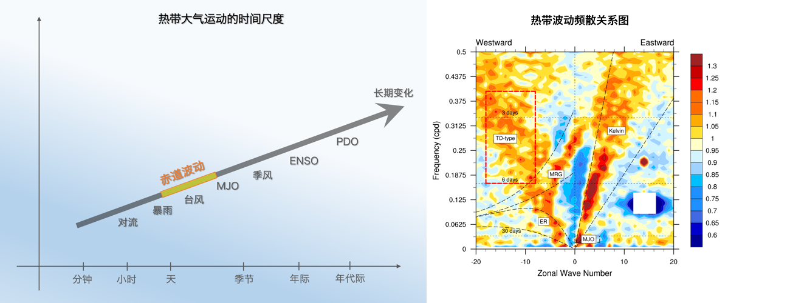
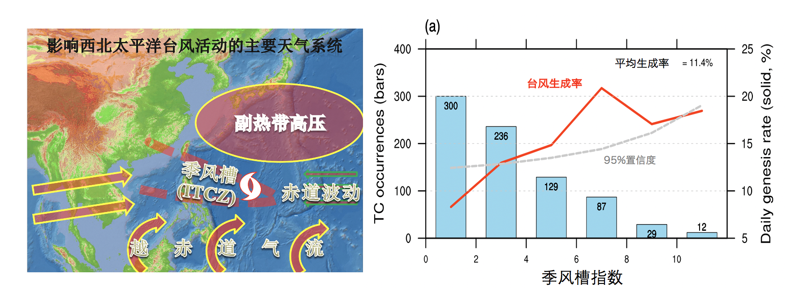
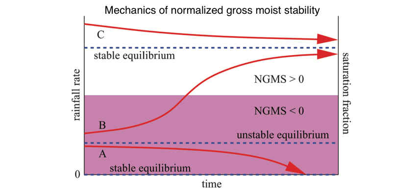

台风、对流与热带波动

我的研究兴趣
- 对流耦合波动
- 台风多尺度变率
- 热带对流
热带波动指的是热带大气中的一些周期性的振荡现象,它们的发展往往伴随着深对流的活动，因此被称作对流耦合波动。这些沿着赤道传播的波动将大气的动能与水汽输送到热带的各个区域，影响热带地区的天气变化。在西北太平洋海域,这些赤道波动影响了超过80%的热带气旋(或称台风, Wu and Takahashi 2017, Chen and Chou. 2014)的生成。同时，这些热带波动又提供周期性的辐合-辐散环流场，调制了热带地区的对流活动。因此，对流耦合波动的理论、机制与变率是我研究的核心内容，并以此为基础探索其对台风与对流活动的影响。
对流耦合波动

热带大气动力学的基础是Matsuno(1966)年的开创性工作，他通过简单的浅水模型得到了赤道波动的波解，预言了低纬大气中存在四种天气尺度的波动。然而，现在卫星观测与频谱分析表明，热带大气中除了有Matsuno(1966)所述的四种波动以外（下图中少了重力惯性波），还具有另外两种波动现象，即MJO和热带低压型(TD型)波动（右图中红框的区域）。在2000年以前，TD型波动的结构与机理一度是热带研究的热点问题之一，但是在此之后研究发生了停滞。个人推测这一方面与MJO研究的兴起有关，另一方面与这种波动的特征有关：它的频率与台风十分接近，台风的活动往往伴随着TD波的活动（如封面图所示），而台风明显是更值得研究的一个问题。事实上，2000年以后，大气探测的资料、数值模式的结果、以及热带对流-环流的耦合理论得到了长足的发展，使得大多数热带波动现象（包括MJO）得到了很好的解释。然而，当我们试图用这些理论去解释TD波中的对流耦合过程的时候，却发现理论的结果与新的观测事实大相径庭（Feng et al. 2020a，二审中）。这样的结果促使我们尝试去重新建立一套有关TD波动的自洽的结构、机制（Feng et al. 2020b, 二审中）乃至理论。这一部分的是我最近几年工作的主要内容，仍然在继续进行当中。而在此前已经发表的工作中，我们也得到了一些很有意思的结论：
-
一般认为，西北太平洋对流层中有两种天气尺度（3-10天）的波动：MRG波与TD波。然而，我们发现除了TD波以外，西北太平洋还存在一种最大振幅发生在对流层高层，垂直结构明显向东倾斜的天气尺度波动（冯涛等，2016，大气科学；Feng et al. 2020c）。因为以往对TD波的识别往往依赖于850hPa扰动风场的分析，前提就是我们认为波动的最大振幅发生在对流层低层。而这种新的天气尺度波动的发现，很可能干扰我们对TD波的识别。
-
观测分析发现，西北太平洋天气尺度波动的最大振幅，到底是发生在高层还是低层，明显受到垂直风切变的调制：当背景风场为西风切变的时候，波动最大振幅发生在高层；当背景风场为东风切变的时候，波动最大振幅发生在低层。而在垂直风切变符号发生变化的区域，高层的动能会通过垂直输运下传到低层，而后低层的扰动在大尺度基本气流（比如季风槽）的作用下继续发展（Feng et al. 2016 JAS）。
台风多尺度变率
 这是由我的博士论文自然衍伸而出的一个研究方向，主要研究台风的年际、年代际变率，相关的一些科学问题总结在2013年的综述文章之中（冯涛等，2013）。尽管大尺度环流的变化在影响台风活动变率中所起的作用不可小视（Feng et al. 2014; 2017）,我仍然希望能够着眼于波动去讨论台风活动的问题（冯涛等，2016；Feng et al. 2020c）。研究台风的多尺度变率，对于季节至长期台风预测都有比较重要的作用。但是近年来，我在该方向的研究投入精力较少，往往是以合作的文章为主，主要原因之一是因为我在该方向上缺乏试验论证手段。单个台风的数值模拟试验需要消耗大量的计算资源，而台风的年际-年代际变化需要的资源十分夸张。如果具有足够的计算能力进行试验论证，并且将台风的多尺度变率进行定量化讨论，我个人认为仍然是个十分有意思的方向。
另一个相关的工作已经在近期完成。在西北太平洋台风多尺度变率研究的文章中，相当一部分机理都要通过西北太平洋季风槽的变化来解释。然而，目前对于季风槽的定义并不一致，甚至连AMS的气象术语表中对于季风槽的定义都存在很明显的问题。Molinari and Vollaro将这些定义总结在了他们的文章之中(Molinari and Vollaro 2012)，他们认为季风槽只有定义在气候平均的角度上时才是有意义的。然而，这明显与我们的惯常操作相违背，因为我们经常在逐日天气图上分析季风槽的变化。因此，基于前人的研究与AMS的气象术语表，我们提出了一种在逐日尺度上的季风槽定义: an elongated area in a weather map showing relatively low atmospheric pressure consisting of easterly trade winds and westerly monsoonal winds（Feng et al. 2020d）。该定义导出有几个关键：
- 从概念上区分季风槽、MJO、以及各种热带波动现象
- 从概念上和技术上区别季风槽环流与台风环流
- 提出了一个在全年可用的季风槽指数（西北太平洋季风槽只存在于北半球夏季，而之前的指数在冬季的时候都会误报存在季风槽）
我们希望这个季风槽指数能在台风多尺度变率，以及台风-环流相互作用的研究中发挥作用。
热带对流
 有关热带对流的研究是我2018年去台湾访问之后才开始感兴趣的内容。原本我只是想用一些简单的工具诊断一下TD波之中对流耦合的机制，谁料却发现这是更加迷人的一座高山。热带大气中的深对流活动对大气环流有决定性的影响，相关研究基本可以分为两大主题：
- 对流导致的潜热加热如何在各个时间尺度上影响大气环流；
- 大气环流的变化如何影响深对流的活动。
前者而言，Gill Response几乎能够解释绝大部分的大气环流异常问题；而对后者而言，教科书的学习让我只记得了对流不稳定和CISK（第二类条件不稳定），然而实际上新的理论层出不穷，花样繁多，比如convective quasi-equilibrium就有多个版本，实在是令人眼花缭乱。热带对流研究所涵盖的范围非常广，包括了海气相互作用、云-辐射相互作用等。我目前仍然是个初学者，但是对这个课题抱有极大的兴趣，未来的多年时间我也许更多会花在这个方向上。现在我主要基于Gross moist stability的理论框架解释波动中的对流活动；我的研究生郑涛同学也在这个方向进行探索，尝试用一些简单的诊断工具解释降水的变率。但是另一方面，就我查阅的有限文献来看，国内学者对这个方向的研究不是太多，因此国内同行的交流与学习会比较困难。想要从事这个方向的研究，还需要加强与海外的合作，目前我主要与台湾中央大学的余嘉裕教授进行合作，他是gross moist stability最早的研究者之一。尽管这个课题已经超出了物理海洋学研究的范畴，尽管这个课题比较困难，但是越难的问题其实越有意思，欢迎有不畏艰险的老师和同学一起进行探索。